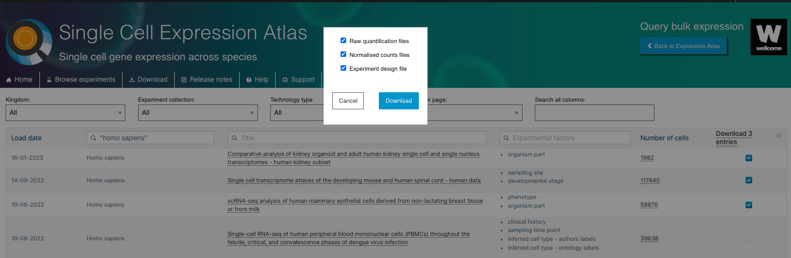
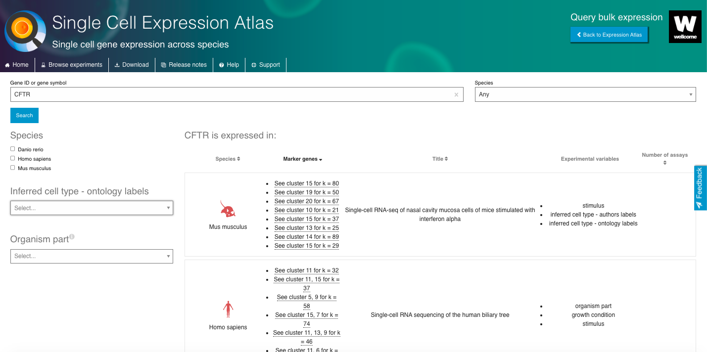
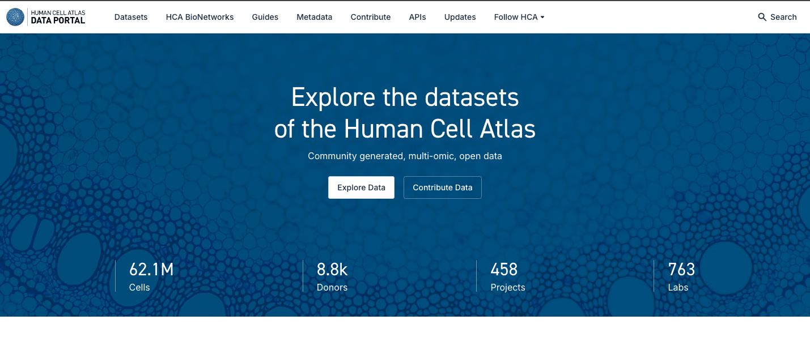
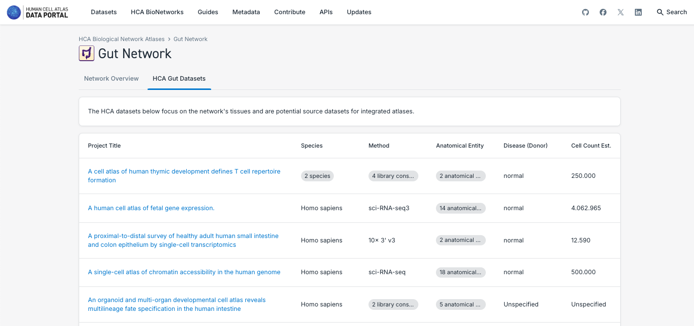
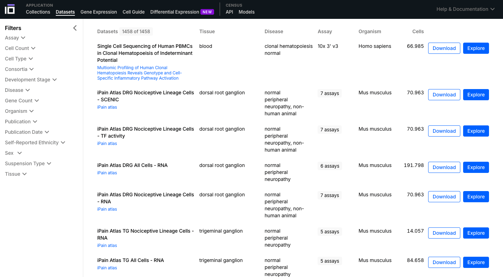
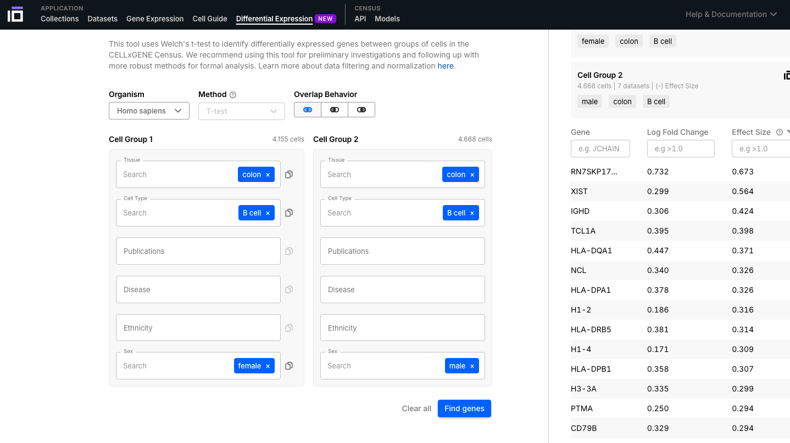
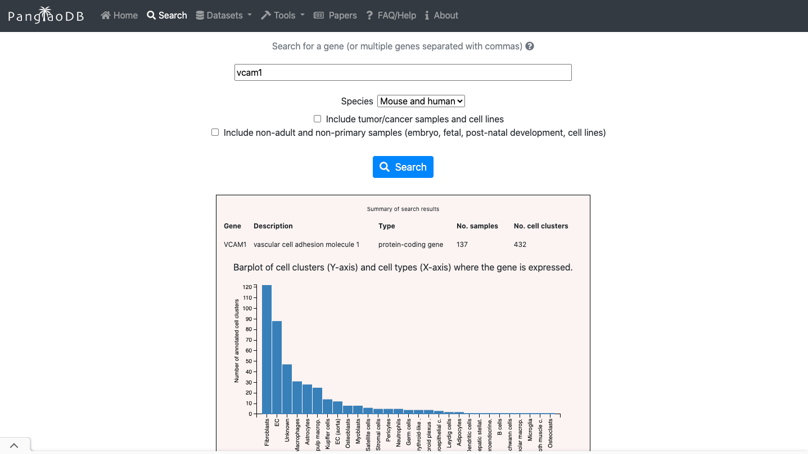
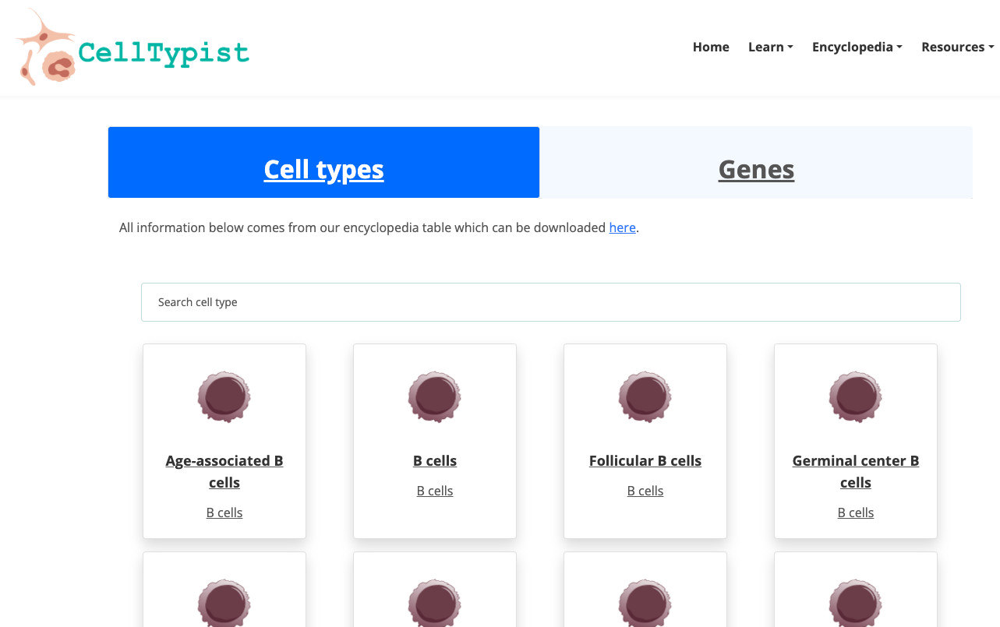
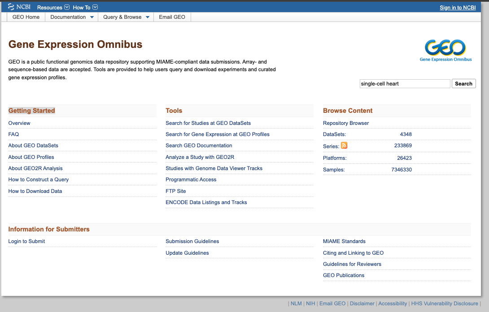
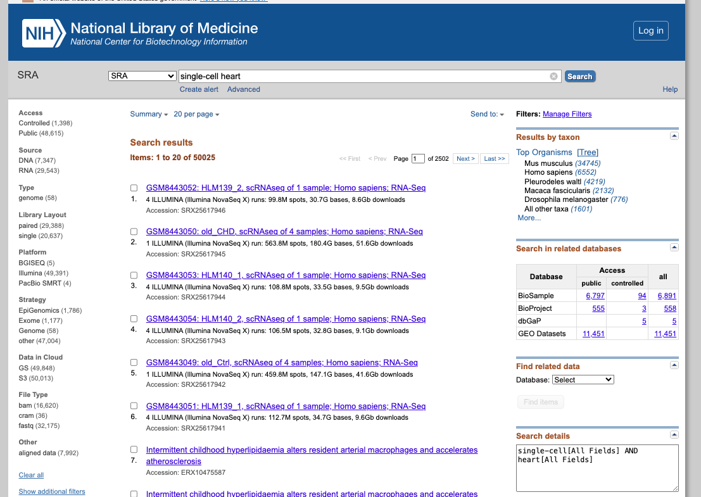

Introduction to Notebooks and Databases
This module provides an introduction to Jupyter Notebooks and Google Colaboratory, exploring their features and structure, including code cells and text cells. Additionally, we cover key public databases for single-cell data and other databases for gene expression, containing information for humans and other organisms. To enhance learning, we provide hands-on exercises for accessing, exploring, and analyzing these databases, allowing users to develop essential skills in biological data manipulation.
Are you familiar with Jupyter Notebooks?
Jupyter Notebooks are an interactive tool that combines executable code, explanatory text, visualizations, and other elements into a single document. Widely used in data science, machine learning, and computational analysis, they support multiple programming languages, with Python being the most popular. Their intuitive interface simplifies data exploration, experiments, and real-time documentation.
Here, we have text cells and code cells serve distinct purposes for organizing and presenting content within notebooks:
Text Cells
Add a Text Cell:
Jupyter Cells
Code CellsAdd a Code Cell:
#test python code here
test = 4
print("Hello World")
Here I can write beautiful texts
Notes:
1: If you want to see the webpages/videos inside this notebook, you need to add this extension:
Google extension or Firefox extension
2: If you want to create a Colab notebook with an R kernel, you can do it with this link:
Colab with R or Other form
Google colaboratory
Google Colab is a free cloud-based platform that allows you to create, run, and share Jupyter notebooks directly in your browser. It supports languages like Python and provides access to powerful computational resources such as GPUs and TPUs, making it ideal for machine learning and data science tasks.
Additionally, it integrates with Google Drive, enabling easy storage and real-time collaboration.
Exploring Single-Cell RNA-seq repositories
In this activity, we will explore online repositories and tools for single-cell RNA-seq data analysis. We will navigate through various databases, including the Single Cell Expression Atlas (https://www.ebi.ac.uk/gxa/sc/home), Human Cell Atlas Data Portal (https://data.humancellatlas.org/), CELLXGENE (https://cellxgene.cziscience.com/), SRA (https://www.ncbi.nlm.nih.gov/sra), GEO (https://www.ncbi.nlm.nih.gov/geo/), (https://panglaodb.se/), CellType (https://celltype.info/), and CellTypist (https://www.celltypist.org/), to discover and explore single-cell RNA-seq datasets. Through this hands-on exercise, you will learn how to access, visualize, and interpret single-cell RNA-seq data using online resources.
Objectives:
Note: This activity is designed to be completed in a self-paced manner, and you can work through the exercises at your own speed.
Single Cell Expression Atlas
The Single Cell Expression Atlas is a web-based repository that provides access to a vast collection of single-cell RNA-seq datasets from various organisms and tissues. The atlas allows users to explore and compare gene expression profiles across different cell types, tissues, and conditions. Practical Exercises:
1. Explore the Single Cell Expression Atlas General Interface:

2. Search for a Dataset of Interest:


3. Visualize and Explore Available Data:



4. Now enjoy the reposity, by playing with the data and genes of interest. You can use the embedded browser available below, or the main browser from your computer: https://www.ebi.ac.uk/gxa/sc/home
Human Cell Atlas, Data portal
Brief Description:The Human Cell Atlas Data Portal is a web-based repository that provides access to a vast collection of single-cell RNA-seq datasets from various human tissues and cell types. The portal is the main repository of the Human Cell Atlas initiative, and it allows users to explore, visualize, and analyze gene expression profiles across different cell types, tissues, and conditions generated by the consortium.
Pratical Exercises:
1. Explore the General Portal Interface:


2. Search and Explore a Dataset of Interest:


3. Search and Explore the Atlases Generated by a Human Cell Atlas Bionetwork:





4. Explore the guides available to know more about all functionalities and different aspects of the HCA Data Portal:

5. Now enjoy the reposity, by playing with the data and genes of interest. You can use the embedded browser available below, or the main browser from your computer: https://data.humancellatlas.org/
CellxGENE
Brief DescriptionCELLxGENE is a web-based portal developed by the Chan Zuckerberg Initiative (CZI) that enables interactive exploration and analysis of single-cell RNA-seq data. It provides a user-friendly interface to visualize and compare gene expression profiles across different cell types, tissues, and conditions.
Pratical Exercises:
1. Explore the General Portal Interface:




2. Explore a Dataset of Interest:


3. Explore the Gene Expression Functionality:

4. Explore the Gene Expression Functionality:


5. Explore the Gene Expression Functionality:

6. Explore the CELLxGENE Census:

7. Explore the CELLxGENE Census:
Panglao DB
Brief Description:PanglaoDB is a database for the scientific community interested in exploration of single cell RNA sequencing experiments from mouse and human. We collect and integrate data from multiple studies and present them through a unified framework. Despite being currently discontinued, it is very useful to explore marker genes.
Practical Exercises:
1. Explore the General Portal Interface:



2. Now enjoy the reposity, by playing with the data and genes of interest. You can use the embedded browser available below, or the main browser from your computer: https://panglaodb.se/
CellTypist
Brief Description:CellTypist is a web-based platform designed to facilitate cell type identification, classification, and annotation. It provides a user-friendly interface for researchers to annotate and classify cell types on their own data.
Practical Exercises:
1. Explore the General Portal Interface:




2. Now enjoy the platform, by playing with the data and genes of interest. You can use the embedded browser available below, or the main browser from your computer.
GEO (Gene Expression Omnibus)
Brief DescriptionGEO is a comprehensive public database that archives and freely distributes microarray, next-generation sequencing, and other forms of high-trhoughput functional genomic data. It is an invaluable resource for researchers, supporting discovery of new insights into gene function, regulation and expression; supporting the data reuse.
Practical Exercises:
1. Explore the General Portal Interface:



2. Now enjoy the repository, by playing with the datasets of interest. You can use the embedded browser available below, or the main browser from your computer: https://www.ncbi.nlm.nih.gov/geo/
SRA (Sequence Read Archive)
Briefing Description:SRA is a comprehensive public database that archives and freely distributes high-throughput sequencing data, including RNA-seq, DNA-seq, and other forms of next-generation sequencing (NGS) data.
Practical Exercises:
1. Explore the General Portal Interface:



2. Now enjoy the repository, by playing with the datasets of interest. You can use the embedded browser available below, or the main browser from your computer: https://www.ncbi.nlm.nih.gov/sra
NOTE:
In addition, there is SRA Explorer, an interactive SRA data visualization tool, which facilitates navigation and access to raw data stored in the SRA, allowing for efficient data searching and downloading.